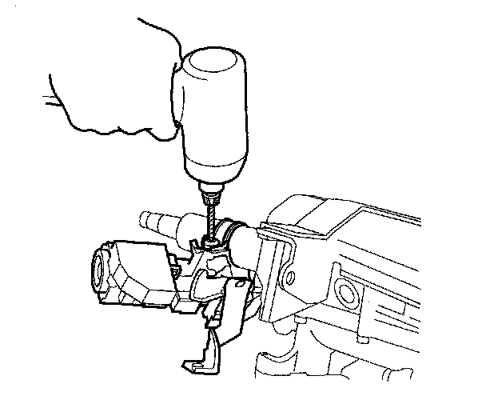
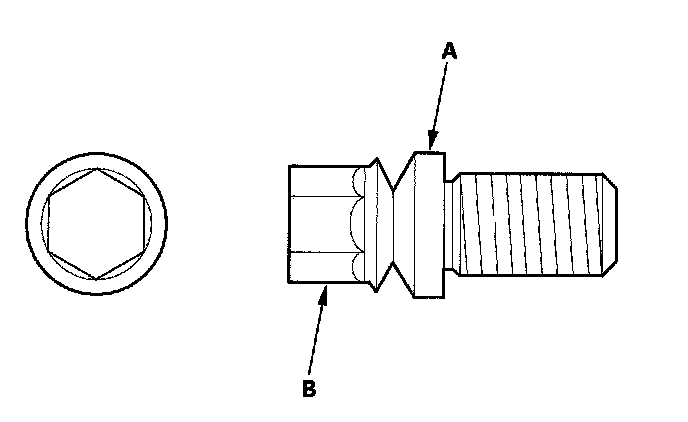

Steering Column Lock: Service and Repair
Steering Lock Replacement1. Remove the steering column.
2. Center-punch each of the two shear bolts, and drill their heads off with a 5 mm (3/16 in.) drill bit. Be careful not to damage the switch body and steering column when removing the shear bolts.

3. Remove the shear bolts from the switch body.
4. Install the switch body without the key inserted.
5. Loosely tighten the new shear bolts.
6. Insert the ignition key, and check for proper operation of the steering wheel lock and that the ignition key turns freely.
7. Tighten the shear bolts (A) until the hex heads (B) twist off.

8. Register the immobilizer-keyless control unit and make sure the immobilizer system works properly.